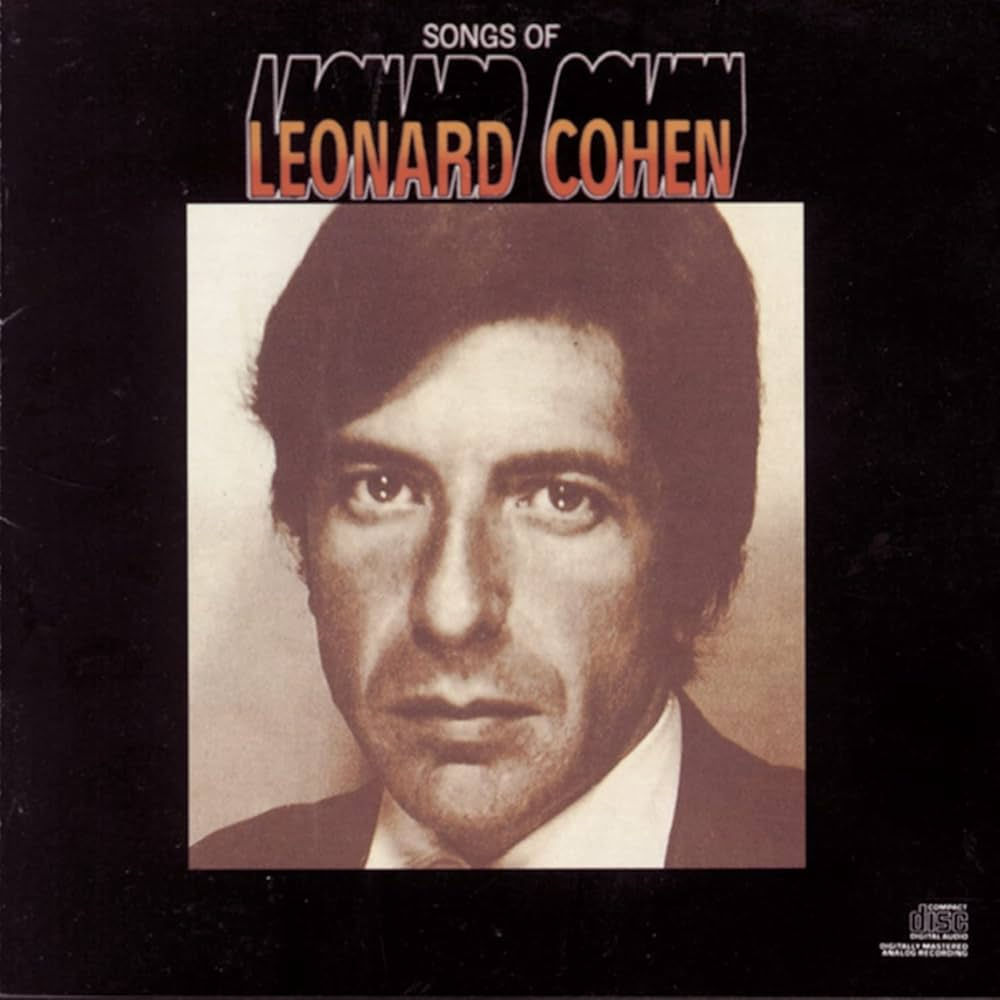
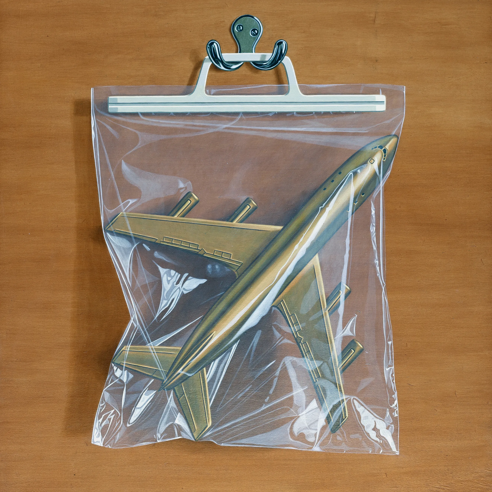

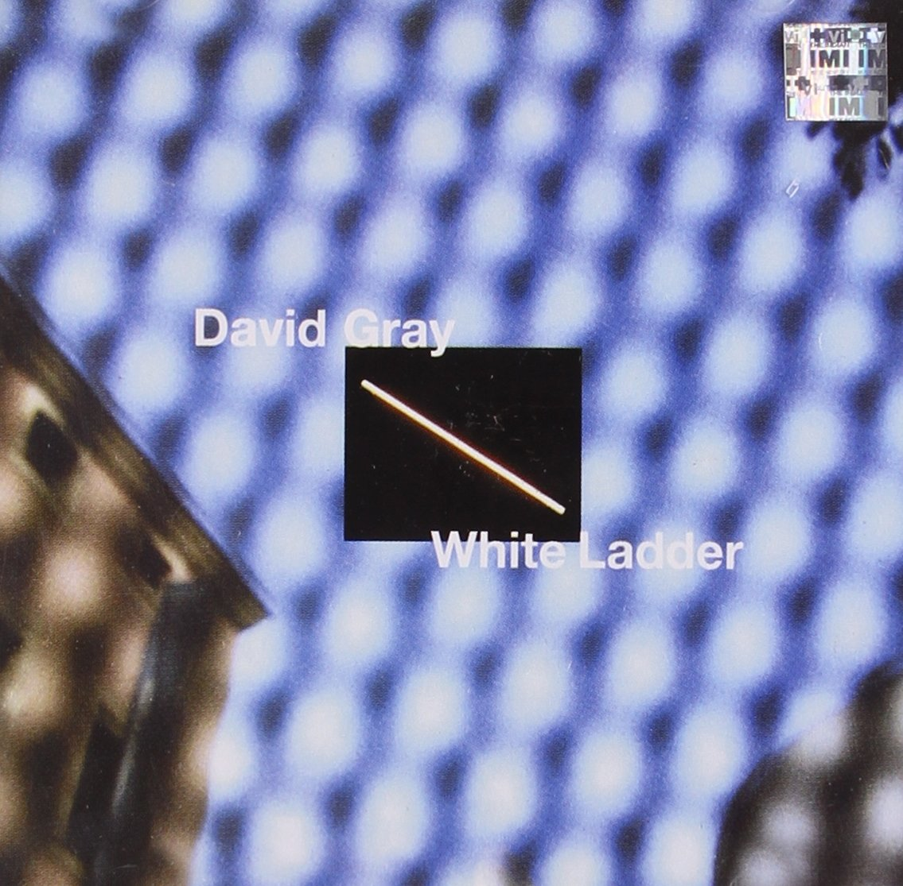
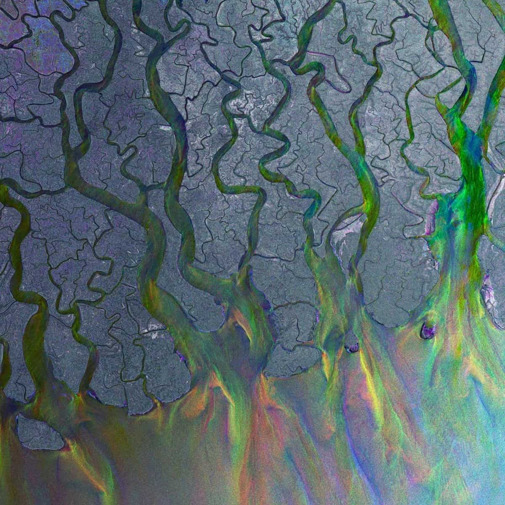
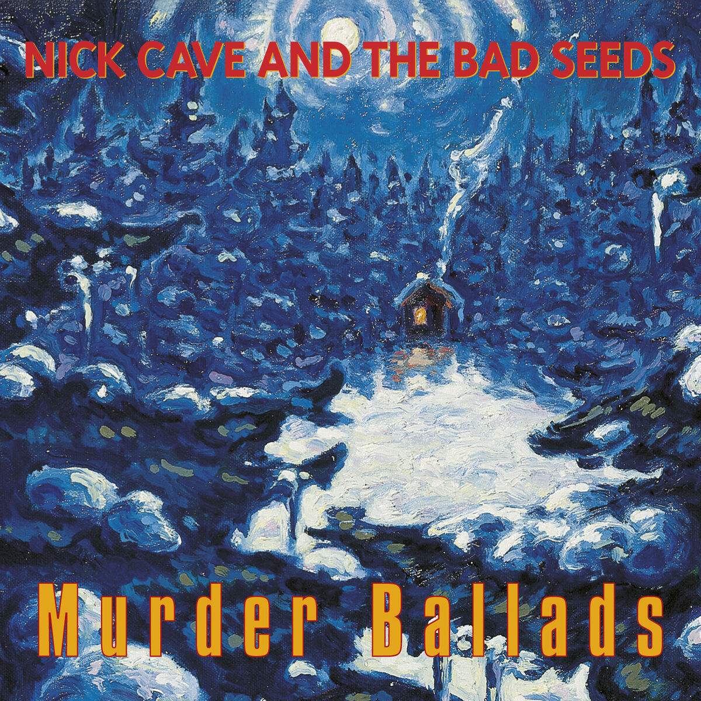
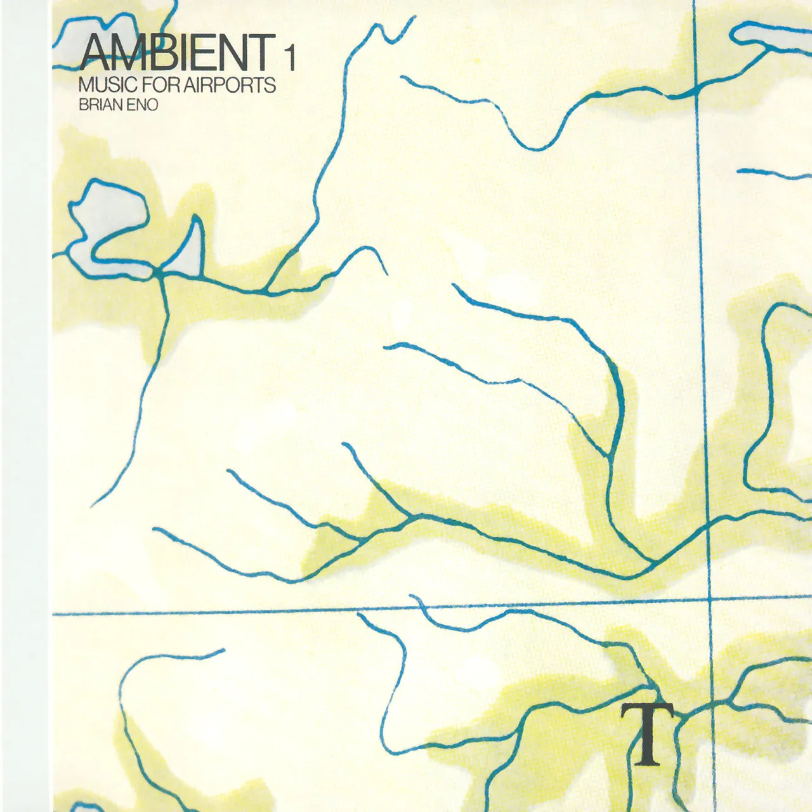
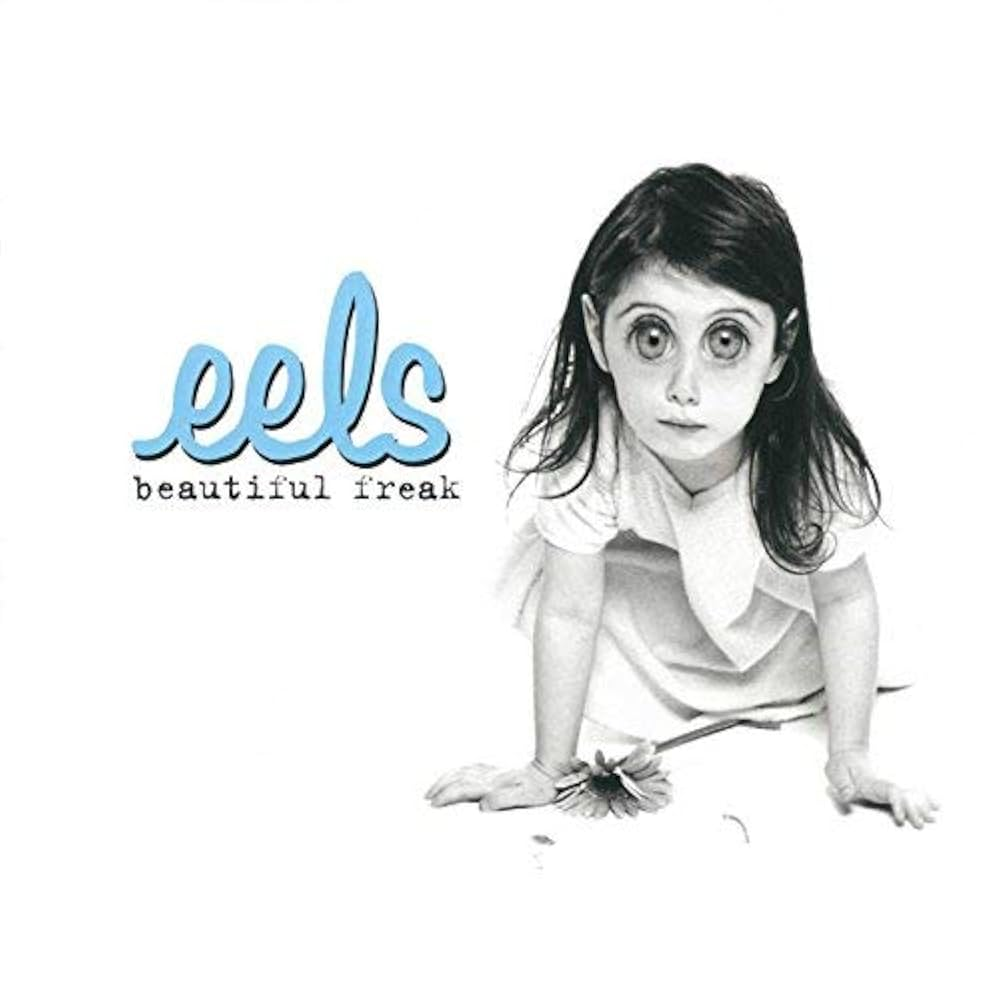
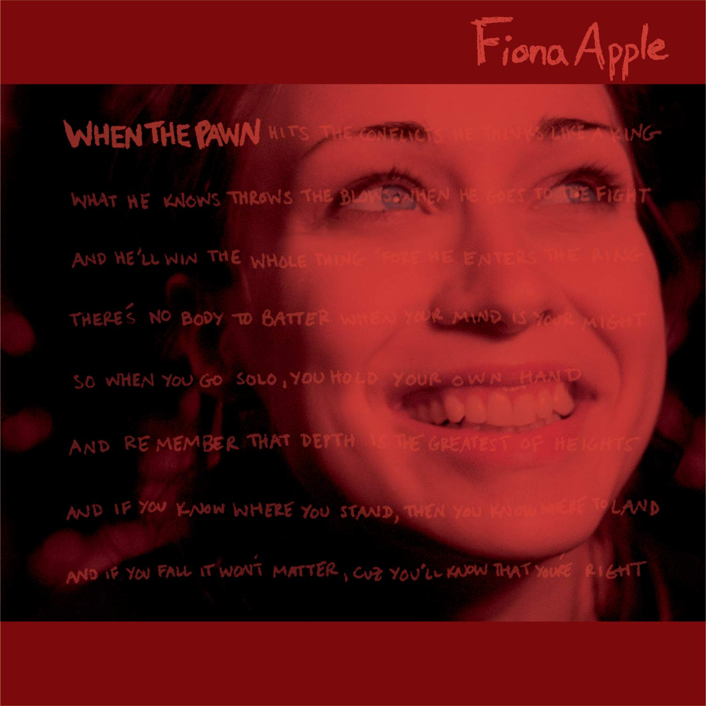
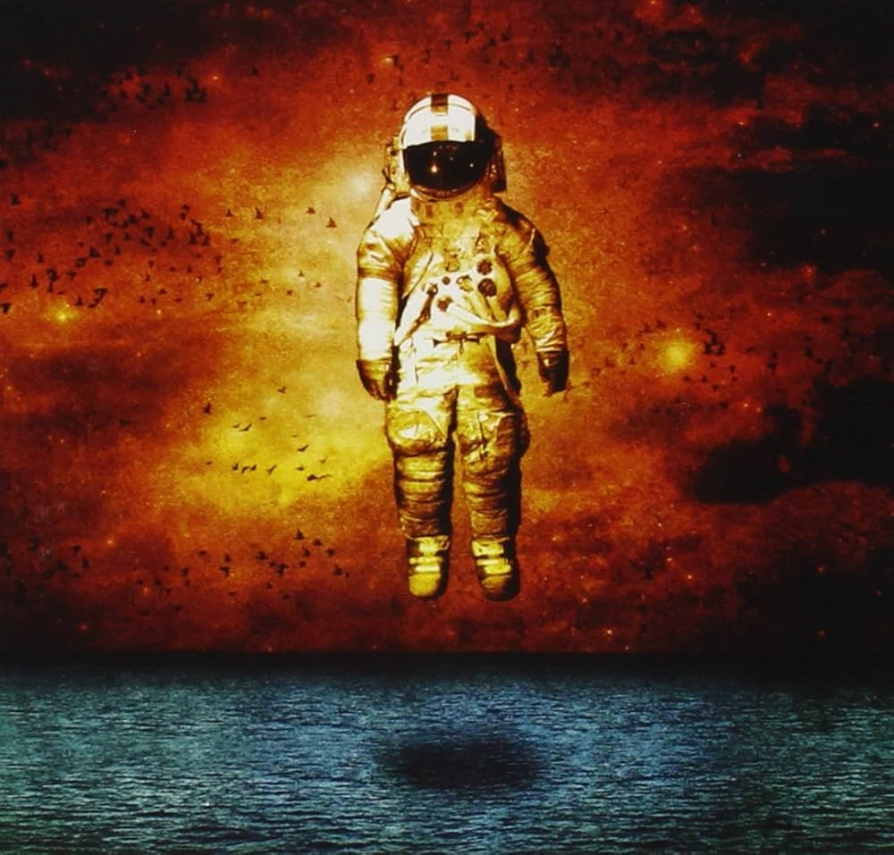
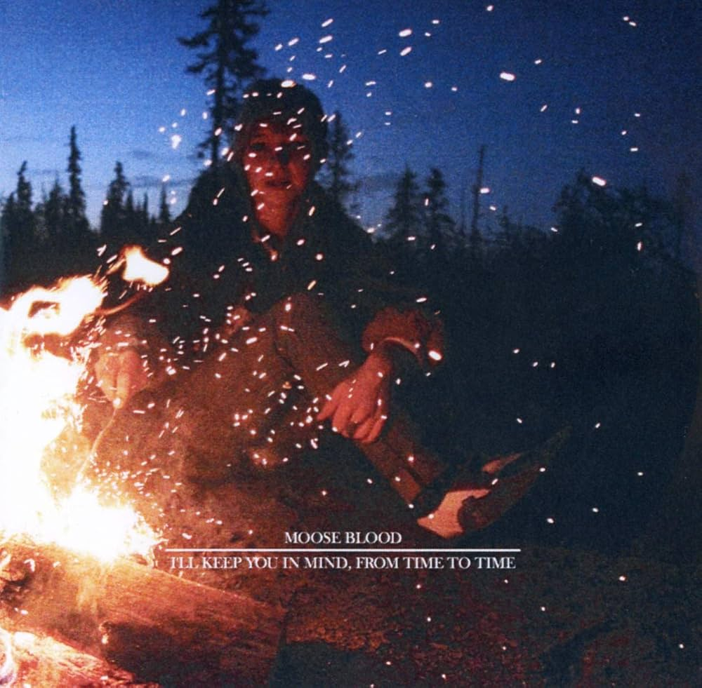
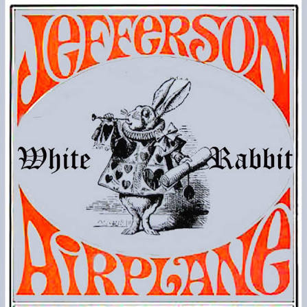
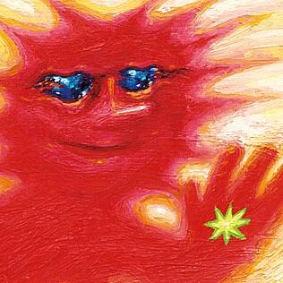

ABOUT ME
Hi, I'm Madeleine!
I did my bachelor's in Computer Science and now I'm a Postgraduate Researcher in the safety of AI.
My PhD centres around the cumulative harms from recommender systems. The aim is to build an agent-based model to observe how the systems affect people and society through the act of recommendation and personalisation.
Safety (especially cumulative systemic harms) deserves more focus, and should be seen not as a constraint but as an innovation in its own right.
I love knitting, reading, gardening, collecting CDs (my favourites on the left), and listening to radio 4.
This website is to document my projects — whether it's coding, research, knitting, or sewing.
I'm hoping this will be a good way to see my progress and keep myself accountable over the 4 years of my PhD.